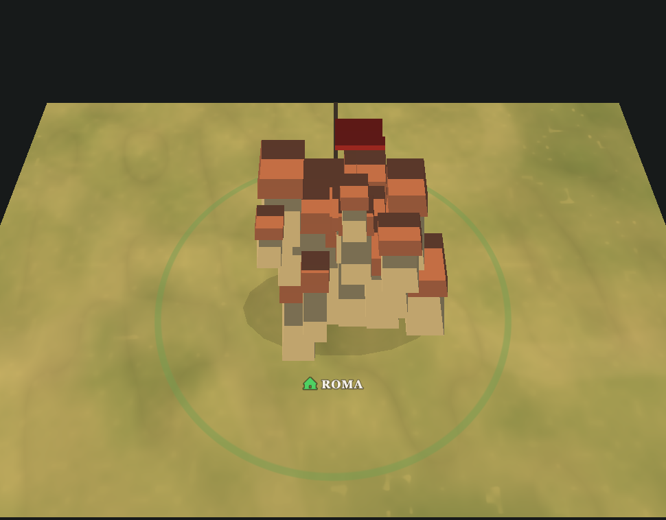

City Cluster
Large settlement has clustered sandstone buildings, terracotta roofs, ownership flag, shadow, label icon, and selected footprint.
- Status
- webgpu-evidence
- Gate
city- Renderer
- raw-webgpu-legacy-model-meshes
- Counts
- entities 1, scenery 0, roads 0, labels 1/1